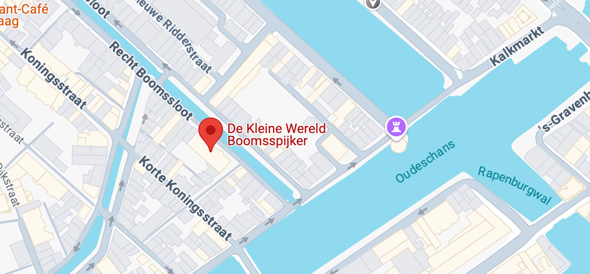
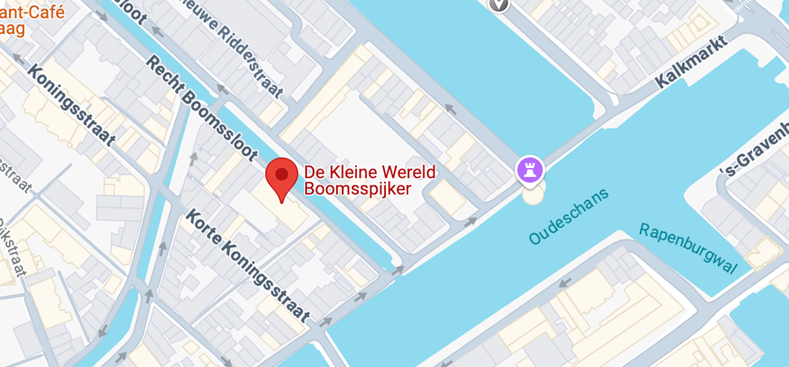
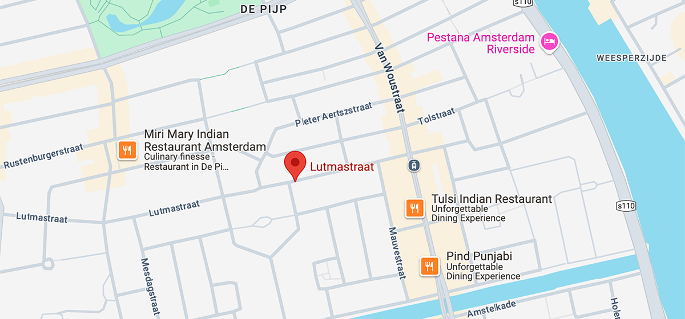
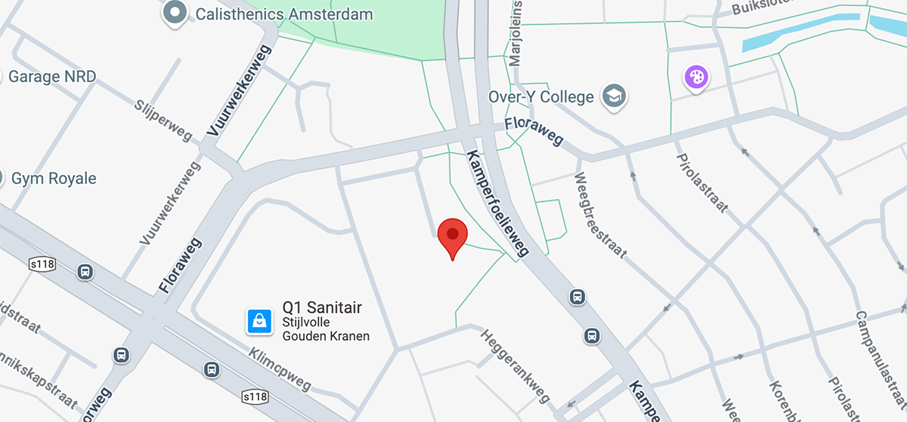
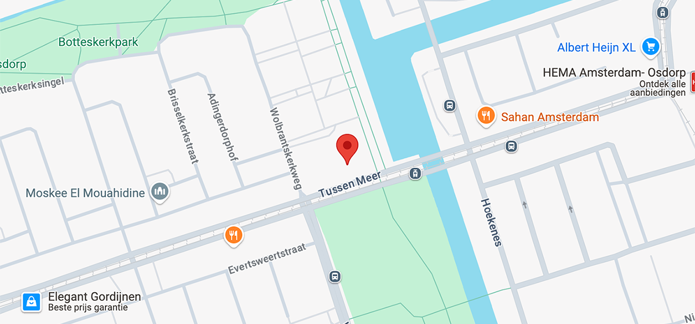
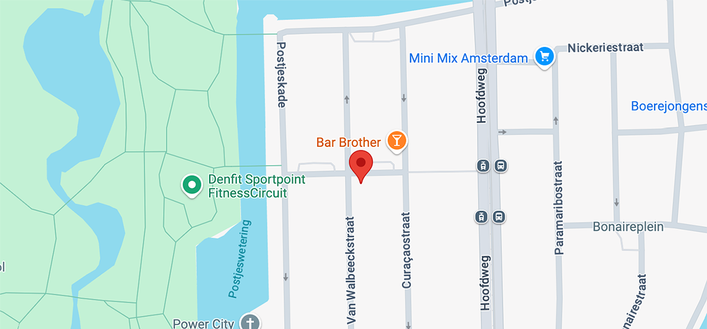
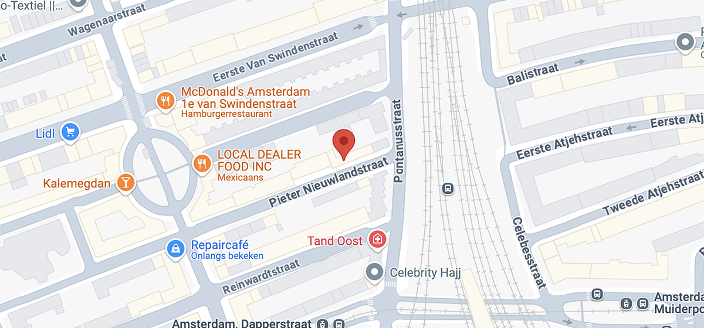
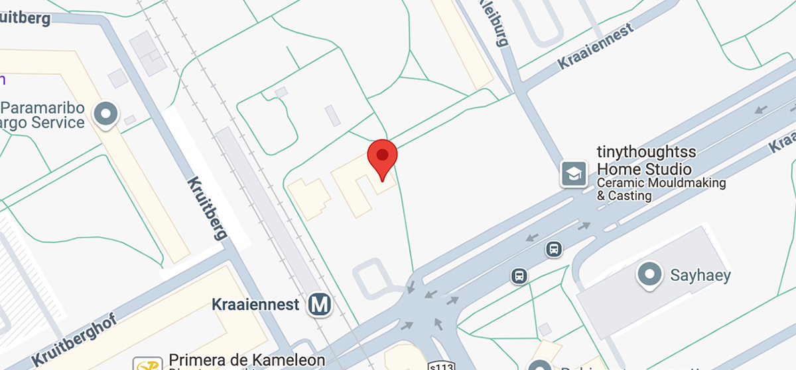

Repair Café De Boomsspijker:
Openingstijden: Elke eerste maandag van de maand, van 13.00 tot 15.00 uur.
Adres: Recht Boomssloot 52, 1011 EC Amsterdam
Telefoonnummer: 020 626 40 02
E-mail: dburger@dock.nl

Openingstijden: Elke eerste maandag van de maand, van 13.00 tot 15.00 uur.
Adres: Recht Boomssloot 52, 1011 EC Amsterdam
Telefoonnummer: 020 626 40 02
E-mail: dburger@dock.nl
Openingstijden: Elke laatste zondag van de maand (behalve in december), van 12.00 tot 16.00 uur.
Adres: Lutmastraat, 1073 GR Amsterdam, Nederland
Telefoonnummer: 06-15404279
E-mail: repaircafedepijp@gmail.com
Openingstijden: Elke eerste woensdag van de maand, van 18:00-20:00 uur.
Adres: Kamperfoelieweg 207, 1032 HM Amsterdam
Telefoonnummer: 06-15404279
E-mail: repaircafeoudnoord@gmail.com
Openingstijden: Iedere donderdag tussen 10:00 en 12:00
Adres: Tussen Meer 68, 1069 DS Amsterdam, Nederland
Telefoonnummer: 06-34487321
E-mail: repaircafeoudnoord@gmail.com
Openingstijden: Elke derde zaterdag van de maand, van 14.00 tot 17.00 uur.
Adres: Corantijnstraat 25, Amsterdam, 1058 DC
Telefoonnummer: 06-51359966
E-mail: repacafe@xs4all.nl
Openingstijden: Elke tweeede zaterdag van de maand, van 13.00 tot 16.00 uur.
Adres: Pieter Nieuwlandstraat 93, 1093 XN Amsterdam
Telefoonnummer: 06-1643515
E-mail: ivan@seiler.nl
Openingstijden:
- Elke eerste vrijdag van de maand, van 15 tot 18 uur, bij de Groene Hub, Holendrechtplein 44.
- Elke tweede vrijdag van de maand, van 15 tot 18 uur, bij de Ster, Woudrichemstraat 8.
- Elke laatste vrijdag van de maand, van 15 tot 18 uur, in Buurthuis de Bonte Kraai.
Adres: Kraaiennest 68, 1104 CD Amsterdam
Telefoonnummer: 06-38450241
E-mail: repaircafe.zuidoost@gmail.com
